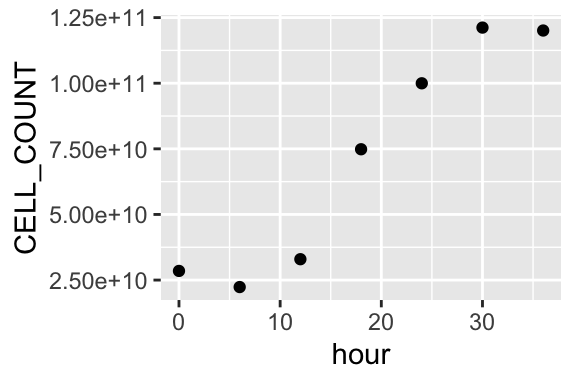
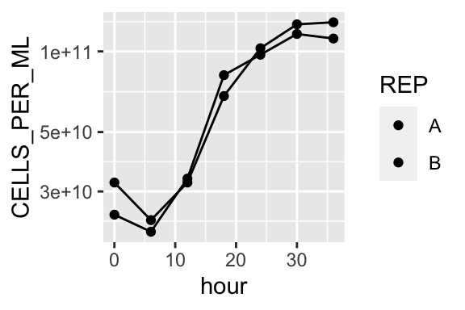
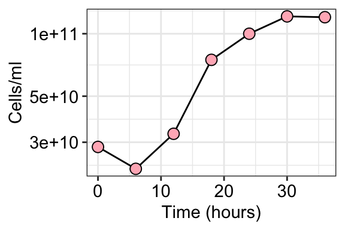

Growth curve
1 Import data from lab
Goal: Understand how microorganisms are counted and quantified, using samples from the natural environment and laboratory cultures.
2 Cell count data
Typical growth curve generation will involve collecting samples over a period of time, fixing them, and then counting them via microscopy. The formula for this:
\[ Cells/ml = \frac{(MeanCellsFOV)(AreaChamber)}{(AreaFOV)(Volume)(DilutionFactor)} \] \[ Area = µm^2 \] \[ Volume = ml \] Area of Field of View(FOV) or counting grid will vary depending on the microscope you are using and the magnification. When you are preparing slides, find information on the area of the filter chamber.
2.1 Import raw cell count data
raw_cell_counts <- read.csv("r-intro-docs/raw-cell-counts.csv")Calculate cells/ml for Sample03. Sample03 was counted at 100x magnification. The area of the funnel used to create the slide has a radius of 8E3 mm. 2 ml of Sample was fixed with formaldehyde at a final concentration of 1%, all of it was filtered onto a 0.2µm filter and stained with DAPI. The counting grid used for each FOV has an area of 1E4 µm^2.
Isolate sample 03 as set of numbers, calculate the average
sample3 <- raw_cell_counts %>%
select(Sample03) %>%
summarise(MEAN = mean(Sample03))
sample3_mean <- sample3[1,1]Write equation from above in R, define variables as R objects as needed.
Mean_cells_per_FOV <- sample3_mean # from average calculation aboveDefine other parameters
Area_chamber <- (pi)*(((8E3)*(1000))^2) #µm^2
Volume <- 2 #ml
Area_FOV <- 1E4 #µm^2 at 100X magnification
Dilution_factor <- 0.9Use in equation:
2.2 Activity
Use the above equation and parameters to calculate cells per ml.
cells_per_ml <- 2.3 Activity
Use the internet to figure out how to report the results in scientific format.
3 Apply to all data
Use tidyverse to modify the data frame and make an output table with cells per ml for each sample.
raw_cell_counts %>%
# Transform to long format
pivot_longer(cols = starts_with("Sample"), names_to = "SAMPLE", values_to = "CELL_per_FOV") %>%
# Estimate average cells per FOV and variance for each count
group_by(SAMPLE) %>%
summarise(MEAN = mean(CELL_per_FOV), VAR = var(CELL_per_FOV)) %>%
# use mutate and copy above equation to calculate cells per ml
mutate(CELLS_PER_ML = ((MEAN)*(Area_chamber))/((Volume)*(Area_FOV)*(Dilution_factor))) %>%
# Option to add column with same values in scientific
mutate(SCI_cells_per_ml = format(CELLS_PER_ML, scientific = TRUE, digits = 3))# A tibble: 8 × 5
SAMPLE MEAN VAR CELLS_PER_ML SCI_cells_per_ml
<chr> <dbl> <dbl> <dbl> <chr>
1 Sample01 13.1 24.1 146328404487. 1.46e+11
2 Sample02 7.9 8.32 88243846981. 8.82e+10
3 Sample03 2.5 6.94 27925268032. 2.79e+10
4 Sample04 9.3 9.79 103881997079. 1.04e+11
5 Sample05 15.1 19.9 168668618913. 1.69e+11
6 Sample06 9 5.33 100530964915. 1.01e+11
7 Sample07 23.3 23.1 260263498057. 2.60e+11
8 Sample08 11.3 8.23 126222211504. 1.26e+11 3.1 Activity
Export the new table as a .csv file
4 Estimate growth rate
Import another set of cell count data and metadata. Combine to make a plot of the growth curve.
cell_counts_01 <- read.csv("r-intro-docs/cell-count-data01.csv")
metadata_01 <- read.csv("r-intro-docs/sample-info-data01.csv")Apply above code again to calculate cells per ml for each sample
# head(cell_counts_01) # rename some of the variable so it is applicable to these new data.
cell_counts_01 %>%
pivot_longer(cols = starts_with("X"), names_to = "SAMPLE", values_to = "CELL_per_FOV") %>%
group_by(SAMPLE) %>%
summarise(MEAN = mean(CELL_per_FOV), VAR = var(CELL_per_FOV)) %>%
mutate(CELLS_PER_ML = ((MEAN)*(Area_chamber))/((Volume)*(Area_FOV)*(Dilution_factor))) %>%
mutate(SCI_cells_per_ml = format(CELLS_PER_ML, scientific = TRUE, digits = 3))# A tibble: 14 × 5
SAMPLE MEAN VAR CELLS_PER_ML SCI_cells_per_ml
<chr> <dbl> <dbl> <dbl> <chr>
1 X0_A 2.2 4.18 24574235868. 2.46e+10
2 X0_B 2.9 7.21 32393310917. 3.24e+10
3 X1_A 1.9 4.32 21223203704. 2.12e+10
4 X1_B 2.1 3.43 23457225147. 2.35e+10
5 X2_A 3 5.78 33510321638. 3.35e+10
6 X2_B 2.9 4.1 32393310917. 3.24e+10
7 X3_A 7.3 6.23 81541782653. 8.15e+10
8 X3_B 6.1 5.43 68137653998. 6.81e+10
9 X4_A 8.7 7.57 97179932751. 9.72e+10
10 X4_B 9.2 16.8 102764986357. 1.03e+11
11 X5_A 10.4 10.7 116169115013. 1.16e+11
12 X5_B 11.3 9.34 126222211504. 1.26e+11
13 X6_A 10 9.78 111701072128. 1.12e+11
14 X6_B 11.5 10.5 128456232947. 1.28e+11 There are a few data wrangling steps we need to take now. The final goal though, is to be able to look at the A vs B reps for each sample. And we need to fix the error where R places an “X” preceding a numeric (see “SAMPLE” above).
head(metadata_01) sample_id date hour magnification
1 0_A 7/4/22 0 100
2 0_B 7/4/22 0 100
3 1_A 7/4/22 6 100
4 1_B 7/4/22 6 100
5 2_A 7/4/22 12 100
6 2_B 7/4/22 12 100cell_counts_01 %>%
pivot_longer(cols = starts_with("X"), names_to = "SAMPLE", values_to = "CELL_per_FOV") %>%
group_by(SAMPLE) %>%
summarise(MEAN = mean(CELL_per_FOV), VAR = var(CELL_per_FOV)) %>%
mutate(CELLS_PER_ML = ((MEAN)*(Area_chamber))/((Volume)*(Area_FOV)*(Dilution_factor))) %>%
mutate(SCI_cells_per_ml = format(CELLS_PER_ML, scientific = TRUE, digits = 3)) %>%
# Fix SAMPLE names and separate into samples and replicates
separate(SAMPLE, into = c("SAMPLE_NAME", "REP"), sep = "_", remove = FALSE) %>%
mutate(SAMPLE = gsub("X","", SAMPLE)) # edits the SAMPLE cell.# A tibble: 14 × 7
SAMPLE SAMPLE_NAME REP MEAN VAR CELLS_PER_ML SCI_cells_per_ml
<chr> <chr> <chr> <dbl> <dbl> <dbl> <chr>
1 0_A X0 A 2.2 4.18 24574235868. 2.46e+10
2 0_B X0 B 2.9 7.21 32393310917. 3.24e+10
3 1_A X1 A 1.9 4.32 21223203704. 2.12e+10
4 1_B X1 B 2.1 3.43 23457225147. 2.35e+10
5 2_A X2 A 3 5.78 33510321638. 3.35e+10
6 2_B X2 B 2.9 4.1 32393310917. 3.24e+10
7 3_A X3 A 7.3 6.23 81541782653. 8.15e+10
8 3_B X3 B 6.1 5.43 68137653998. 6.81e+10
9 4_A X4 A 8.7 7.57 97179932751. 9.72e+10
10 4_B X4 B 9.2 16.8 102764986357. 1.03e+11
11 5_A X5 A 10.4 10.7 116169115013. 1.16e+11
12 5_B X5 B 11.3 9.34 126222211504. 1.26e+11
13 6_A X6 A 10 9.78 111701072128. 1.12e+11
14 6_B X6 B 11.5 10.5 128456232947. 1.28e+11 Combine with metadata
cell_counts_01 %>%
pivot_longer(cols = starts_with("X"), names_to = "SAMPLE", values_to = "CELL_per_FOV") %>%
group_by(SAMPLE) %>%
summarise(MEAN = mean(CELL_per_FOV), VAR = var(CELL_per_FOV)) %>%
mutate(CELLS_PER_ML = ((MEAN)*(Area_chamber))/((Volume)*(Area_FOV)*(Dilution_factor))) %>%
mutate(SCI_cells_per_ml = format(CELLS_PER_ML, scientific = TRUE, digits = 3)) %>%
separate(SAMPLE, into = c("SAMPLE_NAME", "REP"), sep = "_", remove = FALSE) %>%
mutate(SAMPLE = gsub("X","", SAMPLE)) %>%
# Use 'left_join' to line up the metadata. SAMPLE column matches "sample_id" in the metadata df
left_join(metadata_01, by = c("SAMPLE" = "sample_id"))# A tibble: 14 × 10
SAMPLE SAMPLE_NAME REP MEAN VAR CELLS_PER_ML SCI_c…¹ date hour magni…²
<chr> <chr> <chr> <dbl> <dbl> <dbl> <chr> <chr> <int> <int>
1 0_A X0 A 2.2 4.18 2.46e10 2.46e+… 7/4/… 0 100
2 0_B X0 B 2.9 7.21 3.24e10 3.24e+… 7/4/… 0 100
3 1_A X1 A 1.9 4.32 2.12e10 2.12e+… 7/4/… 6 100
4 1_B X1 B 2.1 3.43 2.35e10 2.35e+… 7/4/… 6 100
5 2_A X2 A 3 5.78 3.35e10 3.35e+… 7/4/… 12 100
6 2_B X2 B 2.9 4.1 3.24e10 3.24e+… 7/4/… 12 100
7 3_A X3 A 7.3 6.23 8.15e10 8.15e+… 7/5/… 18 100
8 3_B X3 B 6.1 5.43 6.81e10 6.81e+… 7/5/… 18 100
9 4_A X4 A 8.7 7.57 9.72e10 9.72e+… 7/5/… 24 100
10 4_B X4 B 9.2 16.8 1.03e11 1.03e+… 7/5/… 24 100
11 5_A X5 A 10.4 10.7 1.16e11 1.16e+… 7/5/… 30 100
12 5_B X5 B 11.3 9.34 1.26e11 1.26e+… 7/5/… 30 100
13 6_A X6 A 10 9.78 1.12e11 1.12e+… 7/6/… 36 100
14 6_B X6 B 11.5 10.5 1.28e11 1.28e+… 7/6/… 36 100
# … with abbreviated variable names ¹SCI_cells_per_ml, ²magnificationNow we have a lot of data in our table! Since these were replicate samples, A and B, we should save a summary table with the average across replicates and other important information
summary_table_01 <- cell_counts_01 %>%
pivot_longer(cols = starts_with("X"), names_to = "SAMPLE", values_to = "CELL_per_FOV") %>%
group_by(SAMPLE) %>%
summarise(MEAN = mean(CELL_per_FOV), VAR = var(CELL_per_FOV)) %>%
mutate(CELLS_PER_ML = ((MEAN)*(Area_chamber))/((Volume)*(Area_FOV)*(Dilution_factor))) %>%
mutate(SCI_cells_per_ml = format(CELLS_PER_ML, scientific = TRUE, digits = 3)) %>%
separate(SAMPLE, into = c("SAMPLE_NAME", "REP"), sep = "_", remove = FALSE) %>%
mutate(SAMPLE = gsub("X","", SAMPLE)) %>%
left_join(metadata_01, by = c("SAMPLE" = "sample_id")) %>%
select(-REP, -SAMPLE) %>% #remove columns with information on the replicates
group_by(SAMPLE_NAME, hour, date) %>%
summarise(CELL_COUNT_sci = format(mean(CELLS_PER_ML), scientific = TRUE, digits = 3),
CELL_COUNT = mean(CELLS_PER_ML))`summarise()` has grouped output by 'SAMPLE_NAME', 'hour'. You can override
using the `.groups` argument.write_csv(summary_table_01, file = "table_01.csv", quote = c("none"))4.0.1 Plot results
ggplot(summary_table_01, aes(x = hour, y = CELL_COUNT)) +
geom_point()
Repeat cell count
cell_counts_01 %>%
pivot_longer(cols = starts_with("X"), names_to = "SAMPLE", values_to = "CELL_per_FOV") %>%
group_by(SAMPLE) %>%
summarise(MEAN = mean(CELL_per_FOV), VAR = var(CELL_per_FOV)) %>%
mutate(CELLS_PER_ML = ((MEAN)*(Area_chamber))/((Volume)*(Area_FOV)*(Dilution_factor))) %>%
mutate(SCI_cells_per_ml = format(CELLS_PER_ML, scientific = TRUE, digits = 3)) %>%
separate(SAMPLE, into = c("SAMPLE_NAME", "REP"), sep = "_", remove = FALSE) %>%
mutate(SAMPLE = gsub("X","", SAMPLE)) %>%
left_join(metadata_01, by = c("SAMPLE" = "sample_id")) %>%
#
ggplot(aes(x = hour, y = CELLS_PER_ML, fill = REP)) +
geom_point() +
geom_line() +
scale_y_log10()
Modify plot theme:
## Data wrangling
cell_counts_01 %>%
pivot_longer(cols = starts_with("X"), names_to = "SAMPLE", values_to = "CELL_per_FOV") %>%
group_by(SAMPLE) %>%
summarise(MEAN = mean(CELL_per_FOV), VAR = var(CELL_per_FOV)) %>%
mutate(CELLS_PER_ML = ((MEAN)*(Area_chamber))/((Volume)*(Area_FOV)*(Dilution_factor))) %>%
mutate(SCI_cells_per_ml = format(CELLS_PER_ML, scientific = TRUE, digits = 3)) %>%
separate(SAMPLE, into = c("SAMPLE_NAME", "REP"), sep = "_", remove = FALSE) %>%
mutate(SAMPLE = gsub("X","", SAMPLE)) %>%
left_join(metadata_01, by = c("SAMPLE" = "sample_id")) %>%
# Ggplot code
ggplot(aes(x = hour, y = CELLS_PER_ML, fill = REP)) +
geom_line(aes(linetype = REP)) +
geom_point(shape = 21, color = "black", size = 3) +
theme_bw() +
labs(x = "Time (hours)", y = "Cells/ml") +
theme(axis.text = element_text(size = 11, color = "black"),
legend.title = element_blank()) +
scale_y_log10()
ggplot(summary_table_01, aes(x = hour, y = CELL_COUNT)) +
geom_line() +
geom_point(shape = 21, color = "black", size = 3, fill = "lightpink") +
theme_bw() +
labs(x = "Time (hours)", y = "Cells/ml") +
theme(axis.text = element_text(size = 11, color = "black"),
legend.title = element_blank()) +
scale_y_log10()
4.0.2 Growth rate & Generation time
In Excel, calculate growth rate of the monoculture and the generation time.
Generation time: internal of time required for the cells to divide (G). t = time interval, B = cells at T0 and b = cells at T1, n = number of times the cell population doubles during time interval.
\[ G = \frac{t}{n} \] \[ b = (B)(2^n) \] \[ n = \frac{logb - logB}{log2} \] \[ G = \frac{t}{3.3(log\frac{b}{B})} \] We can assume that the best time points to capture generation time during exponential growth are at hour 12 and 30. Calculate the generation time in Excel and then repeat it in R here.
b <- summary_table_01 %>% filter(hour == 30)
b$CELL_COUNT[1] 121195663258B <- summary_table_01 %>% filter(hour == 12)
B$CELL_COUNT[1] 32951816278G_min <- ((30-12)*60)/(3.3*(log10(((b$CELL_COUNT)/(B$CELL_COUNT)))))
G_min[1] 578.6214The gradient of the slope if the growth rate. Isolate 3-4 points from the exponential growth phase. In this case, it is at hours 12, 18, 24, and 30. > In base R, log() calculates the natural logarithm.
exp_hour <- c(12, 18, 24, 30)
exp_growth <- summary_table_01 %>%
filter(hour %in% exp_hour) %>%
mutate(NAT_LOG = log(CELL_COUNT))Use linear regression and output thee coefficients to determine growth rate.
lm(NAT_LOG ~ hour, exp_growth)
Call:
lm(formula = NAT_LOG ~ hour, data = exp_growth)
Coefficients:
(Intercept) hour
23.55762 0.06994 model_output_coefficients <- coef(lm(NAT_LOG ~ hour, exp_growth))
# model_output_coefficients
slope = model_output_coefficients[2]Growth rate (in hours)
slope hour
0.06994376 4.0.3 Activity
Does bacteria 2 grow faster at higher temperatures? Plot growth curves using provided data